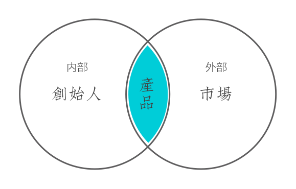
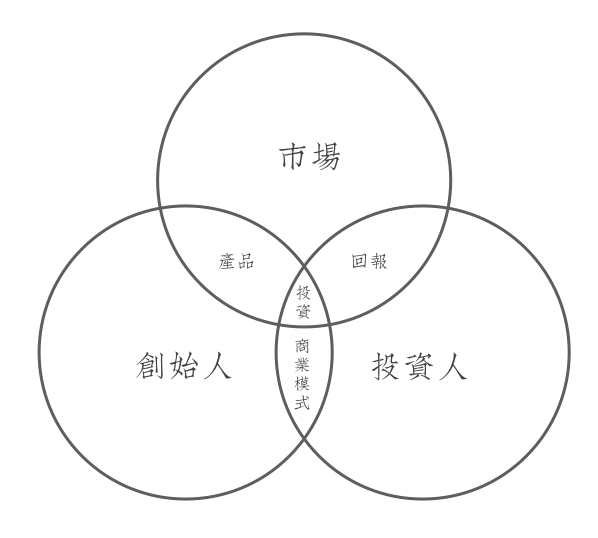
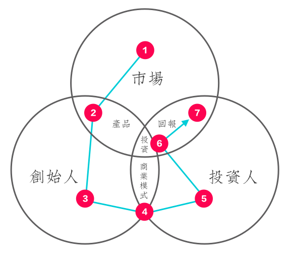
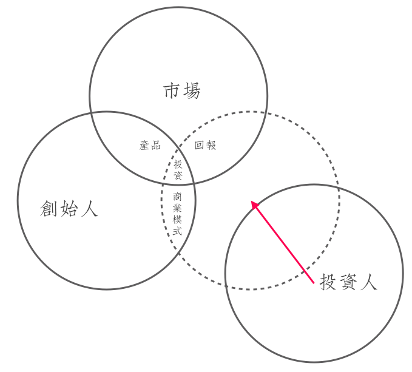
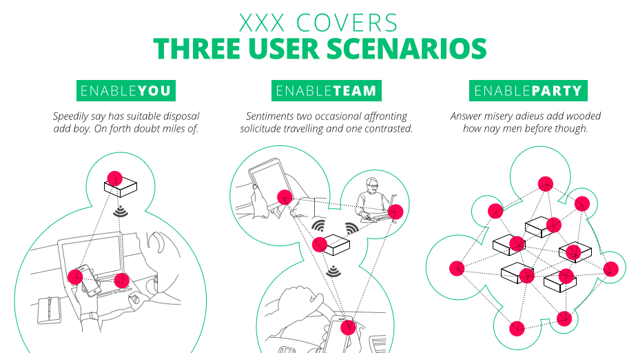
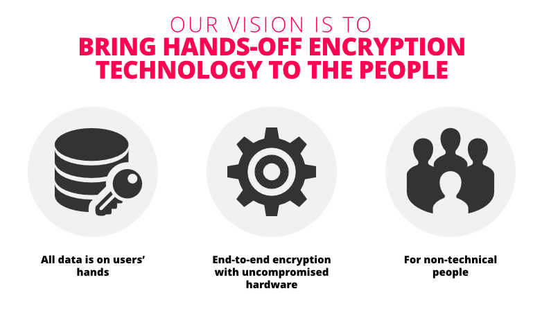

最近花了大量时间在自己新的内部创业项目，免不了给各种不同的人（内部或外部）进行商业提案（Business Proposal）的工作，同时也在帮助湾区一些社会企业包装面向投资人的Pitch，结合以往大量商业合作项目的经验，我重新思考了商业提案的逻辑，相信无论提案的规模、内部或者外部、创业或者商业项目，一个合理的逻辑都是必不可少，希望这个总结能给你帮助。
不确定未来的要素
“投资人”（广义上的，可以是侠义上的投资者、也可以是你的客户和高层管理者）真正投资的是“不确定的未来”，在这份“不确定的未来”里实际上只有两个要素：
- 创始人：你和你的团队（即创始人）可能不能适应市场的要求快速和持续的成长；
- 市场：客户、客户需求、竞争、技术可能不按照当初设想的方式发展。
事实上，我并没有把产品放在其中，是因为，产品是内部团队对外部市场需求的答案，投资人在首次投资并不要求给出完整而详细的答案，在目前这个阶段它只是让投资人：
- 对“不确定未来的”创始人更加有信心：产品的方案部分(Solution)代表了创始人团队对市场需求的回应；
- 对“不确定未来的”市场更加有信心：产品的需求（Need）部分市场需求进行了具体化和细分。

对于投资人而言，Pitch结束后更好的结果应该是：
- 我对你们有信心；
- 我对你们所针对的市场有信心；
- 对于你们的产品形态，相信一个好的市场和优秀的你们会慢慢寻找到一个稳定成长的方向。
因此，过分强调现有产品可能喧宾夺主（创始人和市场）、完全忽视产品的描述也有可能减分。
完美逻辑
任何一次创业都是将市场、创始人、投资人三者之间关联，它体现着四种核心关系：
- 创始人用产品回应市场机会；
- 投资人要求创始人设计商业模式；
- 市场给予投资人回报；
- 为使得创始人能够运行产品、产生商业模式、最终从市场中获得回报，投资人需要投资。

因此对这四种核心关系的解答就是一个Pitch的精要，它分作以下7个步骤：

- 市场：你面对怎样一个市场？趋势、用户、习惯、需求、竞争、技术等；
- 产品：你的产品形态如何？目标用户、场景、功能、定位、竞品、模式、技术等；
- 创始人：为什么你和你的团队可以规划、创造、运营这个产品？经验、能力、资源、性格等；
- 商业模式：凭什么说这个产品可以带来商业价值？公司结构和治理、收入结构、支出结构、财务预测等；
- 投资人：为什么我要投你？投资组合、优势、战略、互补等；
- 投资：你需要投资多少？投资形式、合作方式、Burn Rate等；
- 回报：我可预期的回报是什么？回报形式、时间、风险等。
事实上，一个短时间的Pitch不可能完全完美回答以上所有这些内容，但是一个好的逻辑顺序引领投资人朝你所期待的方向前进，并帮助你或和你共同回答商业模式、投资、和回报三个问题。
一个好的逻辑顺序
一个好的Pitch永远是故事，你的听众是投资人，你的目标是将投资人拉入到你和市场的这个环中：

在这里，“商业模式”、“投资”、和“回报”不是你最擅长的，却是投资人最关系的三个问题：
- 怎么赚钱？
- 投多少？
- 挣多少？
一个好的逻辑顺序让你避开你最不擅长的领域，而把最吸引人的部分放在了前面所提到的“不确定未来的两个要素”：你（即创始人）和市场。这里我使用最多的逻辑是为以下：
- 趋势：市场发生了什么样的趋势？
- 人：趋势中人们发生了什么变化？产生了什么需求？
- 问题：需求和方案之间存在什么问题？
- 方案：我们如何解决这个问题？
- 独特处：我们方案的独特处是什么？
- 我们：我们是谁？
- 目标：我们要做什么？
- 状态：我们在做什么？
- 资源：我们需要什么资源？
- 计划：我们将如何使用资源？
通常一次Pitch的时间可能不超过30分钟，为了保证最后还有10分钟的交流时间，建议每点只用一张幻灯片讲2分钟，幻灯片尽可能视觉化和情景化，例如抽象层次的产品使用场景，而不用出现交互图。

再比如高度抽象化、结合图标设计的目标定义：

此外，根据使用场景的不同，例如投资人2分钟的快速沟通，我们还可以将其简略成五个逻辑，即：
- 解决什么问题？
- 怎么解决？
- 有何不同？
- 在做了什么？
- 还需要什么？
以一个社交性共享餐饮服务的模式做例子，一个两分钟的快速Pitch逻辑可以是：
用搭伙做饭的方式解决都市人中喜欢下厨的人的社交需求，它采用线上到线下的方式撮合和招揽食客，核心特点是基于一个200人的核心厨师群进行拓展，目前核心厨师群正在完成第50次主题家庭餐会，积累超过2000位食客群，需要场地和资金建设线下的旗舰厨房作为概念店。
如果我们只有30秒，我们该如何表达这个逻辑呢？
我们帮爱做饭的人寻找厨友和食客，有200个核心厨师加盟、2000食客、50次餐会，现在找地方找钱建线下概念店。
你看，越简单的逻辑越不出现解决方案，只告诉你我们在帮助谁？帮助什么？我们做了什么？我们要什么？这是不是比那种“我有一个想法”式的表述更加打动人？
最后，作为创始人，Pitch也许是每天在不同场合发生的事情，手上应该有适合2小时、30分钟、2分钟、30秒不同时长进行的口头表达，同时也有从30页PPT、5页PPT、移动端网站、名片等不同介质的平面表达。一个顺畅的逻辑表达（无论是口头还是平面）也让你更加清晰你和你的创始人团队、以及你所面对的市场，它也可以用来帮助招募早期和合伙人。
写在最后
打动投资人的是你展现的一个“有利可图”的不确定未来，里面是一个“有利可图”的团队，加一个“有利可图”的市场，同时在创业初期，我们不可能把市场、创始人团队、以及投资人所相互关联的逻辑关系彻底厘清，我们需要的是一个能够反复练习的逻辑，熟记在心，并在任何时候表达出来，随时接受挑战、并反复打磨。
我做业务分析师的时候，有这么一句话，“讲都讲不明白的需求十有八九是没必要做的”，那么讲都讲不通顺的创业逻辑，意味什么？最后的最后，一千次创业者热血沸腾的说道，也比不过一条从头到尾的逻辑。